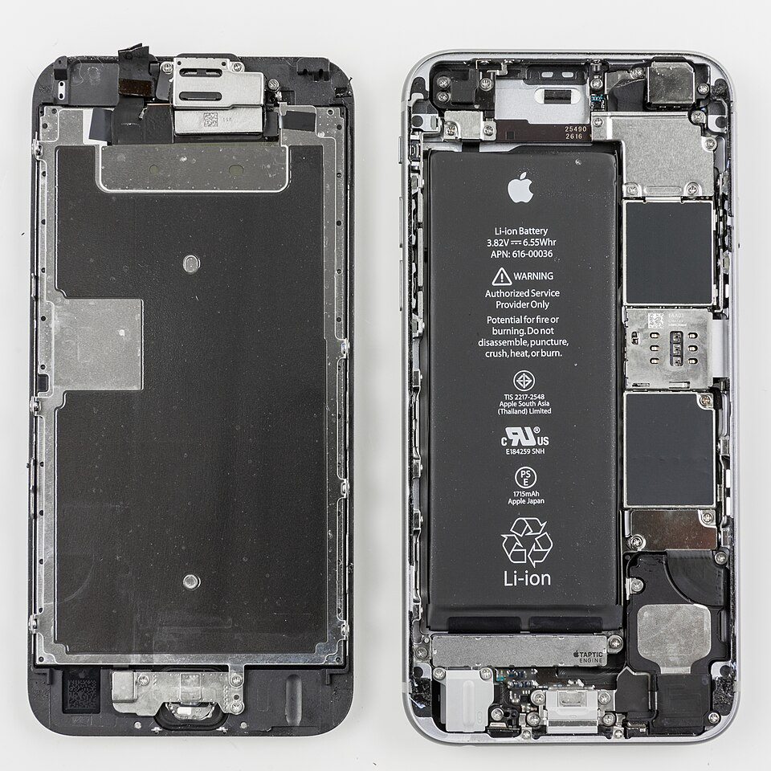

Phone repair, module replacement and final tests
Practise a documented display or other replaceable module procedure on a spare phone. Record the original symptom, the affected functions and the results after reassembly.
Start with a working baseline
Use a spare phone you own with no important data and a physically sound battery. Record the exact model and variant, the reported fault, exterior condition and charge state. Test screen image and touch, buttons, speakers, microphones, cameras, charge, wireless and the sensors you may disturb. Where the phone is usable, back up data and check the documented diagnostic or repair mode. Plan for model-required calibration before ordering a part.
Begin with a module the manufacturer documents as replaceable and for which you have the tools, parts and service instructions. The iPhone 15 manual lists separate display, speaker, camera and USB-C procedures, plus repair videos and views. Samsung publishes an illustrated generic screen workflow and model-specific manuals. Google links Pixel diagnostics and guides. Apple iPhone 15 repair manual, diagrams and video index · Samsung screen-repair walkthrough · Google Pixel repair and diagnostics.
Exercise with a documented display replacement
Watch on YouTube · We Found Apple’s Secret iPhone 14 Redesign - iPhone 14 Teardown · iFixit
Watch the iPhone 14 being opened and compare its internal layout with the iPhone 6s photo. Use the display guide for your own model.

1 · Display assembly. 2 · Battery. 3 · Logic board. 4 · Lightning port.
Photo by Raimond Spekking, resized, with labels added. Original photo · CC BY-SA 4.0.

Rule out other faults first. On a spare with a display complaint, establish whether the phone boots or responds, whether touch or image fails, and whether there are visible impact marks. Record each sign. Use the model’s diagnostic steps to narrow display, flex, or board-level causes before ordering a screen.
Set up and isolate. Read the manual’s first steps, battery and glass safety, removal, reassembly and post-repair sections. Set the charge level required by the manual. Gather the correct drivers, ESD tools, parts, adhesives and model-specified fixture or heat source. Stop for swelling, puncture, unexpected heat or liquid damage. Follow the manual’s battery disconnection order before touching flex connectors.
Document the mechanical work. Draw a screw map, keep brackets paired with their screws, and note flex locations. Follow model-specific opening direction, depth limits and adhesive instructions. Lift connector covers and latches in their documented direction. Inspect sockets under magnification and use the exact part and seal specified.
Close and verify. Reassemble in the manual’s order and run any official post-repair configuration. Verify uniform image, brightness, touch across the full screen and proximity response. Compare front camera, call audio, buttons and charge against baseline. Record part history or calibration messages, functions unavailable for testing, and what the reassembly process establishes about sealing. Apple Repair Assistant and supported parts.
Decide what to offer next
For a phone that rings and shows a black screen, start with the documented display checks. For a no-charge case, do the external comparison in P35 before ordering a connector. Confirm whether the port is a replaceable assembly, part of a daughterboard or soldered to a board on that model. A spare handset is the place to learn adhesive release and connector handling. Record the mentor and procedure you would use before quoting a first repair on a different design.